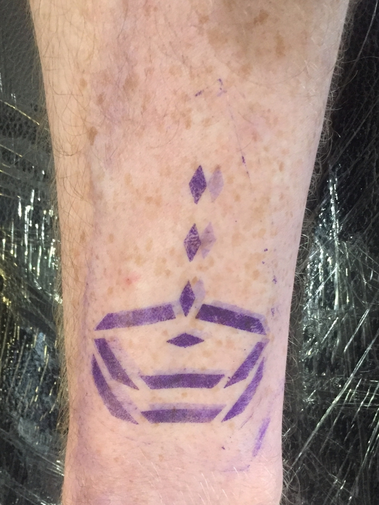
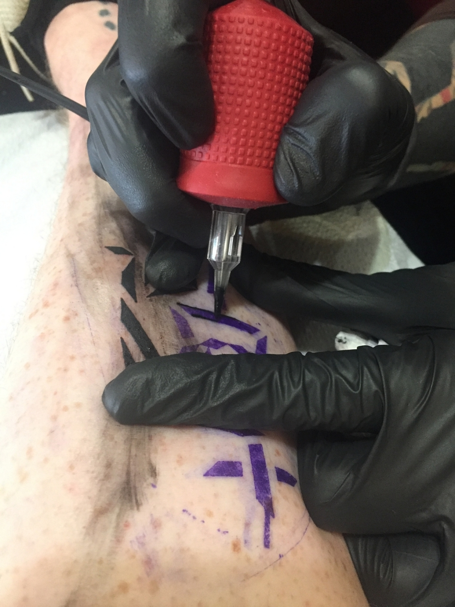
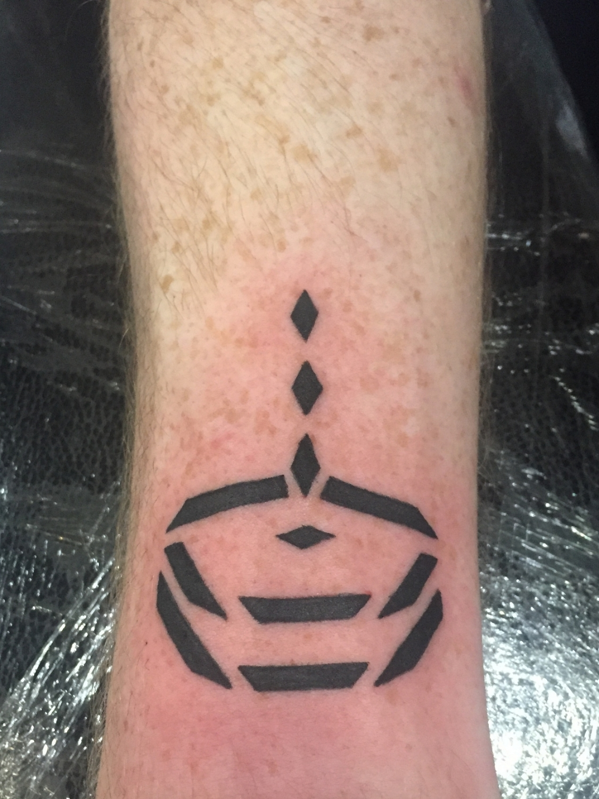
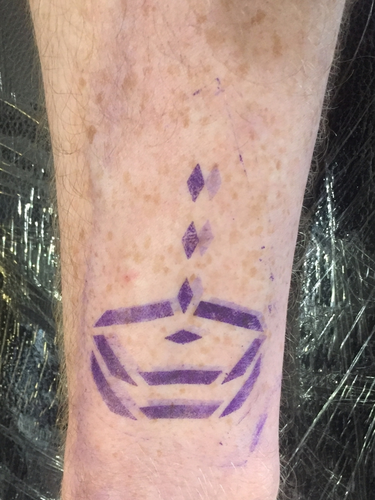
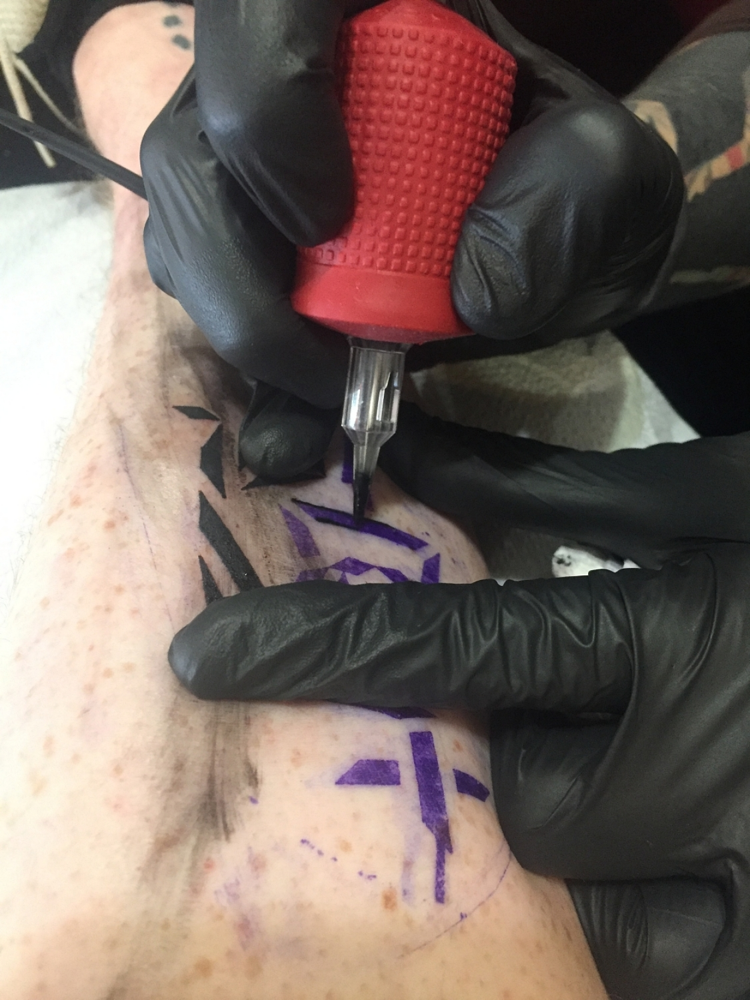
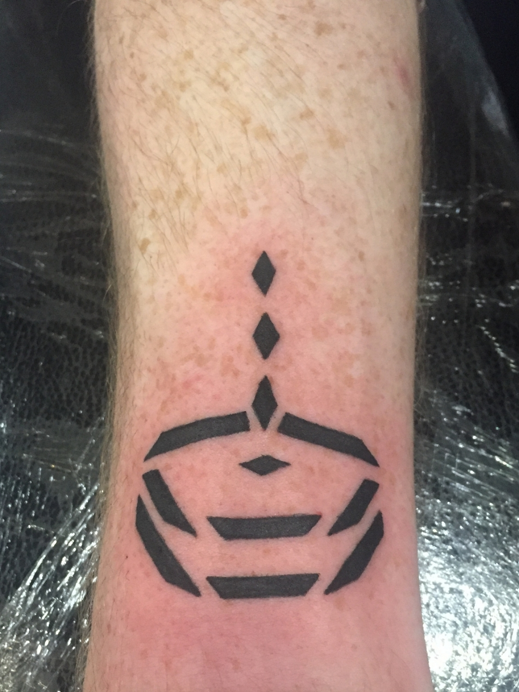

Black Diamond Conversions
◼ A tattoo motif that integrates the aging process.
◼ Ongoing
Challenge
Black Diamond Conversions is an ongoing personal project of rendering ideas and iconography in a modular motif designed specifically for tattooing.


Research
Using traditional tribal tattoos as a starting point, I developed a pattern composed exclusively of black trapezoids. I also taught myself contemporary tattoo techniques and methods to gain a better understanding of the specifics of transcribing the pattern onto skin.
Ideation
I make sketches to “convert” the original idea or reference into the Black Diamond motif. Once the basic form is constructed, the design is iterated digitally.
 





Process
The design is printed out at slight size variations to determine the best fit in relation to the space to be tattooed. A stencil of the selected size is applied after the skin has been shaved and sterilized. The shapes are then lined and filled in with tattoo ink. In the case of the tattoo shown, it was done by a professional.
Result
Over 50 designs have been created so far. As tattoos age, the ink spreads slightly through the skin, and the lines become less defined. Normally considered undesirable, the developed motif anticipates and incorporates this natural degradation. As the tattoo ages on the skin, the small breaks between the lines start to connect, and the tattoo becomes whole as it is “grown into.” More conversions are available to view at: https://hangzhouarchives.xyz/ha_black-diamond.html